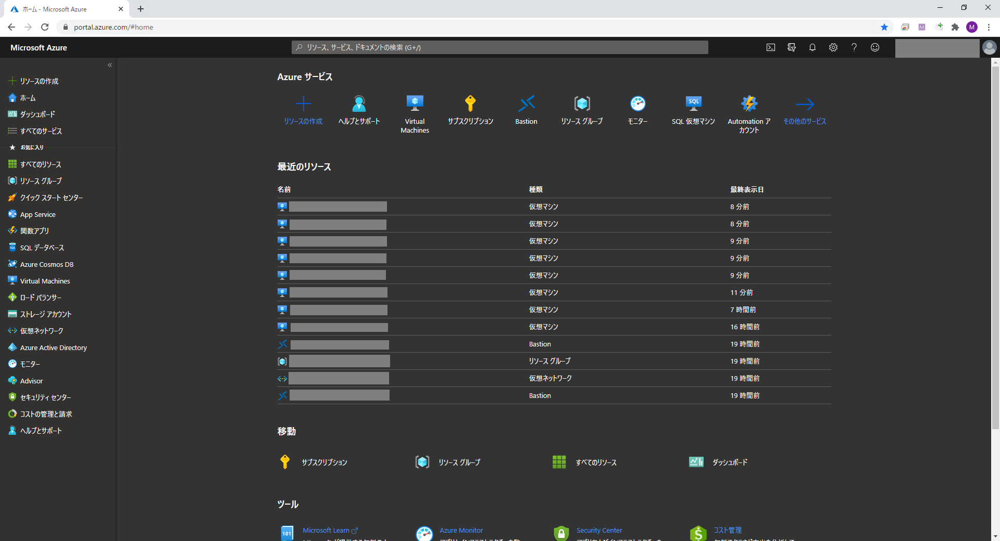
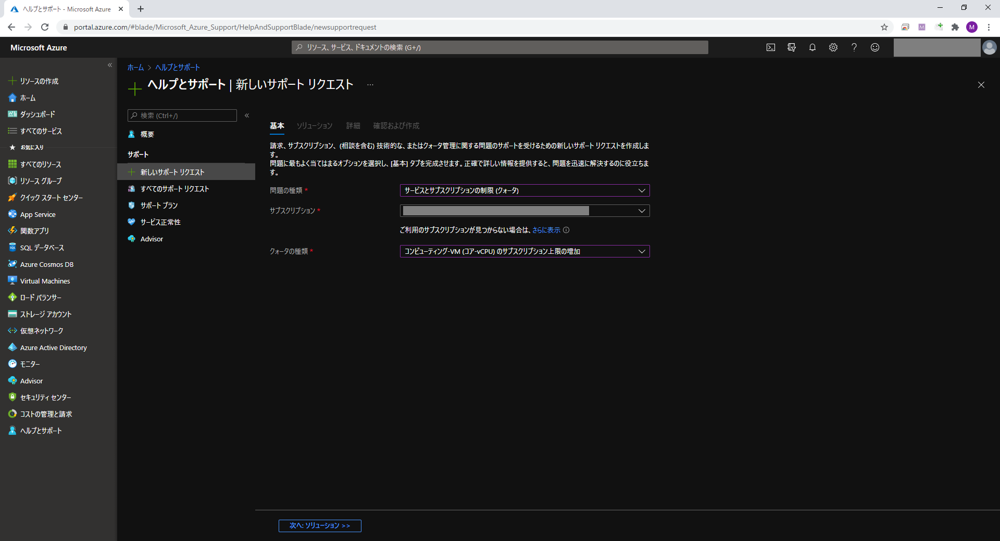
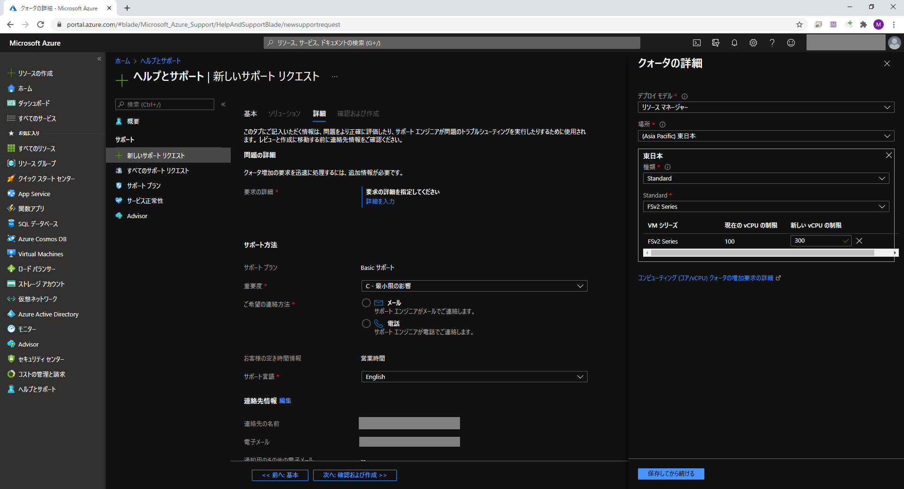
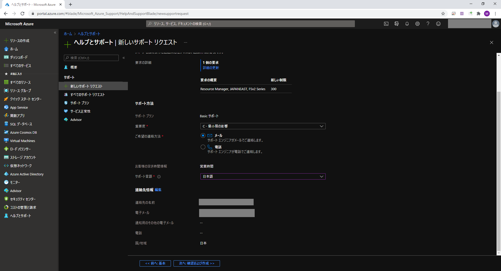
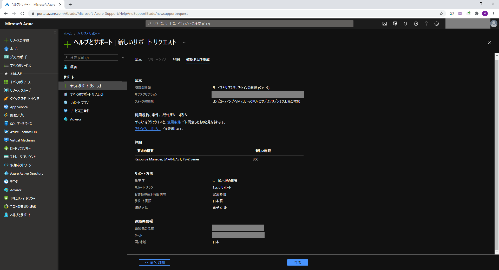

サブスクリプションごとに利用出来るコア数に上限があります。
Azure ではコア数の上限をクォータといい性能評価でマシンサイズを上げるときにクォータ上限の引き上げをサポート経由で依頼する必要があります。
[ヘルプとサポート] をクリックします。

[新しいサポートリクエスト] をクリックします。
[問題の種類] で [サービスとサブスクリプションの制限(クォータ)] を選択します。
[サブスクリプション] で対象のサブスクリプションを選択します。
[クォータの種類] で [コンピューティング-VM(コア-vCPU)のサブスクリプション上限の増加] を選択します。
[次へ: ソリューション »] をクリックします。

[詳細を入力] をクリックします。
[場所] で [(Asia Pacific)東日本] を選択します。
[Standard] で [FSv2 Series] を選択します。
[新しい vCPU の制限] で必要なコア数を入力します。
[保存してから続ける] をクリックします。

[ご希望の連絡応報] で [メール] を選択します。
[サポート言語] で [日本語] を選択します。
[次へ: 確認および作成 »] をクリックします。

[作成] をクリックします。
